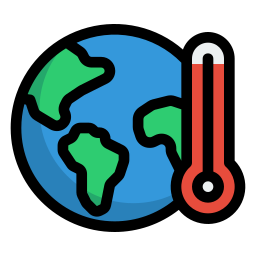

GLOBAL WARMING
Глобальное потепление •❀• Что это такое и как можно помочь?
WHAT IS THAT?
Глобальное потепление -- это потепление климата. Началось оно из-за массового добывания всяких ископаемых, вырубки большого количества леса, добычи электроэнергии, езды на авто и так далее. Какие последствия ГБ ? Средняя температура станет выше, что означает, что произойдет усиление засухи. Штормы станут сильнее, а уровень океана вырастет с тем, как огромные ледники начнут таять. Изменение климата также приведет к тому. что некоторые виды будут исчезать. Некоторые виды животных конечно и смогут выжить мигрируя на другое место, но а некоторые - нет. Возникнет дефицит продовольствия в связи с засухами и увеличения числа экстремальных погодных явлений. В связи с изменением климата также увеличится кол-во рисков для здоровья. Из-за изменения погодных условий будет распостранение различных заболеваний.
